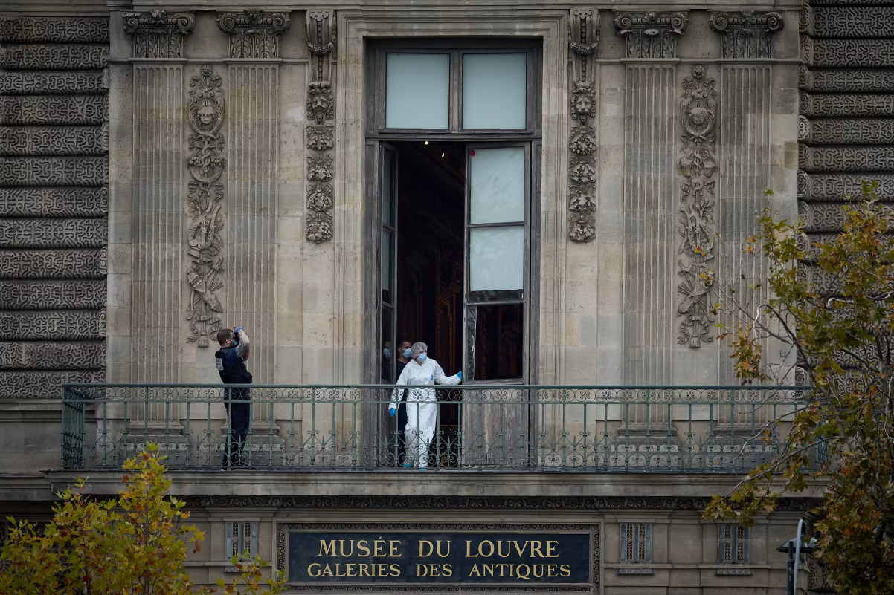
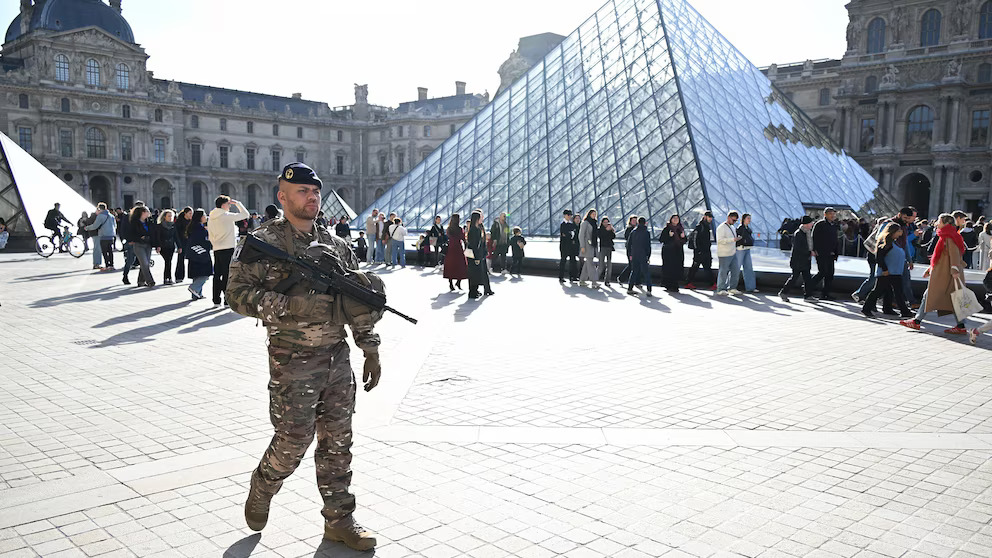
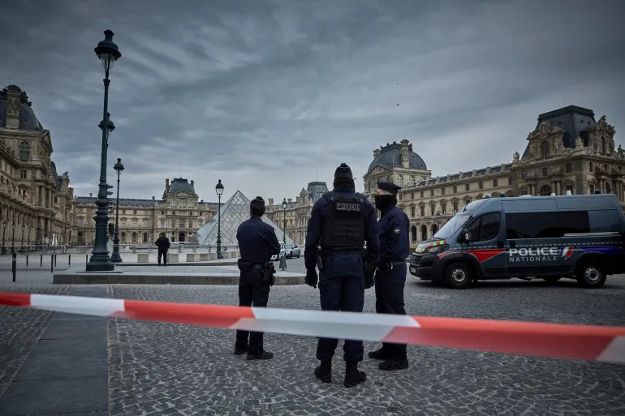
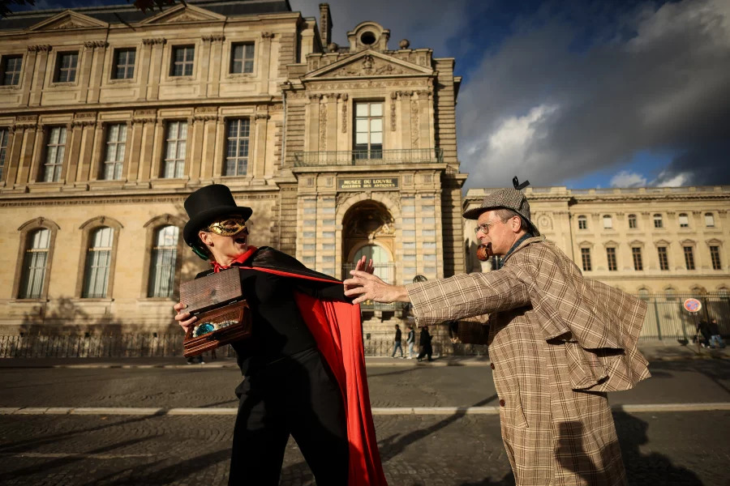

A little pondering
Could you imagine what it would feel like to rob what is widely regarded as the most famous museum in the world? Could you imagine the time and preparation it would take? And do you really expect to get away with it scot-free? Well here's a story for you then, one of unbelievable truth and undeniable smarts seemingly pulled straight out of fiction. They may not look like much, but they really did perform a feat for the ages.
Performing a "stunt" like this in the 21st century with surveliance systems being more advanced than ever before, is what most would consider suicide, but these masterminds with their not-so-master plan, have achieved such a feat with relative ease it would seem. This leaves a concerning question in the minds of most around the world, how secure is security really? To allow the theft of a museum containing some of the world's most famous paintings, along with THE painting of paintings, the Mona Lisa. Watch how the story unfolds, the stolen goods, and the suspects.
The Great Escape
One would be led to believe that robbing the most visited museum in the world, would mean preparations so minute and perfect to the level that people almost don't notice you leave the scene of your crime. But here's quite the opposite of a "swift" escape, adorned in hi-vis jackets shining as bright as the sun, it almost looks like they have time to give a speech and wave to crowds on their way down.
The Aftermath
Thieves broke into the Louvre one month ago. Here’s how police closed in on the suspects

Despite charges filed against 4 suspects in the Louvre heist, stolen jewels still missingt

Why the Louvre heist feels like justice — but isn’t

First, came the Louvre heist. Then came the memes
